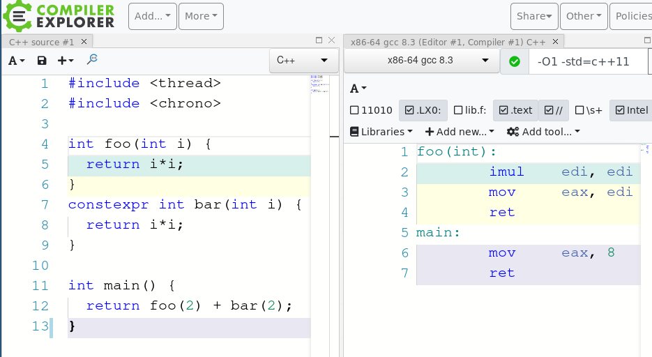

evolution & future of constexpr
wrazik, 2019
You can learn it for many years and it will still suprise you!
It's just a keyword that means that something can be evaluated in constant time
But even though it looks simple it still may suprise some C++ devs!
constexpr keyword was added to C++11
standard distinguish constexpr in three different places:
there is also if constexpr, and metaclass proposal from Herb Sutter with constexpr block
must be Literal Type
... what does it mean?
Literal types are the types of constexpr variable and they can be constructed, manipulated and returned from constexpr function:
Is this class trivially destructible?
struct Foo {
int i;
~Foo() = default;
};
struct Foo {
int i;
~Foo() {}
};
struct Foo {
int i;
~Foo();
};
Foo::~Foo() = default;
struct Foo {
~Foo() = default;
};
struct Bar {
~Bar() {};
};
struct FooBar {
~FooBar();
};
FooBar::~FooBar() = default;
int main() {
constexpr Foo f{}; // OK
constexpr Bar b{}; // Error, non-trivial destructor
constexpr FooBar b{}; // Error, non-trivial destructor
}
...wait, constexpr reference?
int main() {
constexpr int i = 42;
constexpr const int& j = i;
// Error, 'i' is not a constant expression
}
Yes, but only for objects with static storage duration
int main() {
static constexpr int i = 42;
constexpr const int& j = i; // OK
}
Constexpr in object declaration implies const
int main() {
constexpr int i {2};
static_assert(std::is_same<const int, decltype(i)>::value);
static_assert(std::is_same<int, decltype(i)>::value); // Error
}constexpr function doesn't have to be evaluated at compile time
constexpr int foo(const int i) {
return i*i;
}
int main(int argc, char** argv) {
static_assert(foo(5) == 25); // OK
foo(argc); // OK
}
even if it's not used in constexpr context anywhere, it can't contain expression that can't be evaluated at compile time*
constexpr int foo(const int i) {
const int x {42}; // Error in C++11, even though
// not called in constexpr context
return x*i;
}
int main(int argc, char** argv) {
foo(argc);
}
constexpr function can take only LiteralType arguments, and can return only LiteralType value
In C++11, we have whitelist of statements that are allowed in constant time context
constexpr void foo() = delete;
constexpr Foo::Foo() = default;
constexpr void foo() {
;
;;
}
static_assert
constexpr void foo() {
static_assert(sizeof(short int) == sizeof(int));
static_assert(sizeof(int) == sizeof(long int));
}
typedefs and alias declarations that do not define classes or enumarations
constexpr void foo() {
typedef std::string string; // OK, but typedef sucks!
using MyType = some::fancy_namespace::Type<int>; // Ok
}
constexpr void foo() {
typedef struct Foo {} f; // Error, typedef still sucks
}
using declarations and using directives
constexpr void foo() {
using namespace std; // using-directive, Ok, but don't do that
using some::fancy_namespace::Foo; // using-declaration, OK
}
exactly one return statement
constexpr int Fib(int n) {
return n < 2 ? 1 : Fib(n-1) + Fib(n-2);
}
int main() {
static_assert(Fib(6) == 13);
}Note:
constexpr specifier used in a function implies inline
Each of it's parameters must be Literal Type
The class must not have virtual base classes
Can be defaulted, deleted
The same constraints as for constexpr function, except single return statement
constexpr variables has the same requirements as in C++11
Since C++14, we have black list statements not allowed in constexpr context
constexpr function in C++14 must not contain:
assembly block
constexpr int foo(int n) {
asm("movq $60, %rax\n\t"
"movq $2, %rdi\n\t"
"syscall"); // Not compiling
} goto statements
constexpr int foo(int n) {
if (n == 2)
goto error; //goto sucks more than typedef
bar(n);
error:
make_cleanup();
}constexpr lambda
if constexpr
constexpr virtual
constexpr containers: http://www.open-std.org/jtc1/sc22/wg21/docs/papers/2019/p0784r5.html
try/catch
function try/catch
is_constant_evaluated
non-trivial_destructor
debugging
Sources: